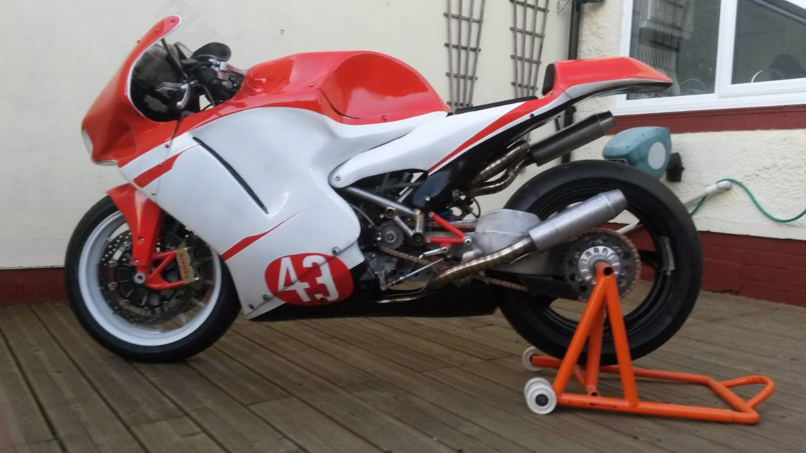

Why build a bike?
The history behind it
The knowledge and technology manufacturers have at their disposal today have deterred a lot of enthusiasts off from attempting to find a better way. Through my young eyes, the challenge seemed somewhat more achievable just 20-30 years ago; Bruce McLaren, Colin Chapman, John Britten are all legends from an era of rapid progression. Today's technology and the cost to implement it typically puts the home brewer out of the picture?
But what if you hop off the systematic development train and address first principles; is cost still an issue?
My aim is not to make the same but better; I am hopeful that through experimentation in the unconventional will introduce new approaches to the basic principals.
There are plenty of good examples of successful home built prototypes across the world; most of which remain out of the spotlight of the media. Experimental parts would be a risk but the hope of the underdog challenging convention is exciting.
All components has been designed and made by myself using my own machines; predominantly manual with infrequent CNC work, along with extensive hand fabrication techniques such as welding, brazing, forming, vacuum infusion, clay moulding or for the few components I have
not tackled such as brake calipers, wheels and crank casings; I have logically sourced elsewhere. The styling and designs are my own work; right from the oil pump to the fairings. Some components only see minutes of use, only to be stored in wake of new improved designs.
The business
In my mid twenties I ran a small engine tuning workshop and sub contracted as an engineer to make up a busy 7 day working week.
I came to learn that working on other people's bikes and turning out tuned engines for club racers wasn't going to teach me more than I already knew.
Time for change. You are what you do and to a certain extent; what you look like too. If I was going to work all day, every day on what I already knew; I would look like it! I wouldn’t learn how to
design and build a chassis. I see no point in making what others can make better with more finance. That's a guaranteed 2nd place for sure. Money can't buy innovation, which inside a competitive environment comes hand in hand with adversity, risk and failure. All of which are necessary to make the bad; better!
Getting stuck in

How it looked in 2017
Every technical hurdle would spark a spell of research through old textbooks but something I was always adamant of was to preserve my focus for first principle; steering away from any prior design. If it already exists; I’m not interested.
That way I felt my mind would have a greater chance of conjuring up something new which wasn’t a result of computer simulation pre-configured, logical algorithms which exist based on old theories.
The years of experimentation have given me a massive understanding of metallurgy, thermal dynamics, aerodynamics as well as patience.
Testing in the Isle of man has accelerated my learning 10 fold. Take a look at the technical journeys across the site and maybe look out for upcoming events… you’ll hear it coming for sure!
So who am I?
I’m 31 at the time of writing this and have been designing, building and racing my own chassis for 4 years. At slower speeds it’s the
best bike I’ve ever ridden; smooth, solid and exciting, with a useful ability to steer wherever you want whilst your braking. The deeper I go, the more sense it makes; the big OEM’s are bound by performance metrics; fearful of research and
design with professional rider’s balls bursting for success. Who would want to risk it all?
Despite not getting on the podium at the toughest race tracks in the world; I believe it has huge potential and in what I can do.
Motivation has been easy to find as the project has picked up momentum as I try to challenge the blind convention. The machining skills and fabrication ability is always evolving and self taught. When I was 19 I was fortunate to be trained on a lathe by a good friend of my father's. It was better than tuition; he didn't teach me how to operate it but instead provoked me to learn by feel.
Friends would recite that gearbox's were the work of the devil and I should never peak inside or I would be haunted for
eternity. My sense of curiosity immediately wanted in; and once inside, I found it quite easy. Along the way I have bought the tools and machines I needed to do the job, some things just needed more concentration than others, there is always more than one way to get the job done; a CNC machine is a luxury, not a necessity.
I'm strangely not a great fan of all things motorcycle. I don't keep upto date with
national or international racers; I watch one or two Grand prixs a year if I'm not too busy. I don't watch TV either, I would rather find something to do.
Look out for other new projects
Keep an eye out for the new carbon fibre Parkes mountain bike project; trialling a new suspension system.